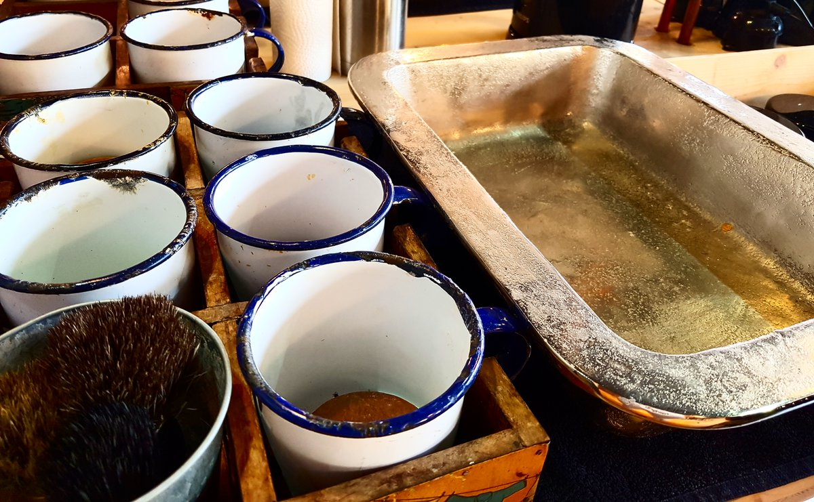

Wie unfair, dass das alles nur für Männer ist! Das war so ziemlich mein erster Gedanke als ich das Barbiero in Dortmund-Hörde am Phoenixsee betreten habe. Industriechic, nackte Backsteinmauern, eine tolle Einrichtung mit viel Liebe für's Detail – ich hätte in diesen loftartigen Laden auch direkt einziehen können.
Barbiero ist nur auf den ersten Blick ein klassischer Barbier, Geschäftsführer Redouan El Hamdi hat aus dem etwas versteckten Hinterhofladen an der Herrmannstraße mehr gemacht, als einen Laden für Bartpflege. Für Redouan ist Barbiero ein ganzes Konzept – ein Ort für eine Auszeit NUR für Männer.
Barbershops machen in letzter Zeit gefühlt an jeder Ecke auf. War der Job in früheren Jahrzehnten ein angesehener und wichtiger Beruf, war er bis vor kurzem fast vergessen. Dabei ist der Barbier damals eine Art Alltagshelfer für den Mann gewesen, sagt Redouan:
"Der Barbier war früher Therapeut, Psychologe und Arzt in einem."
Diese Idee lebt zwischen den alten Backsteinmauern weiter: Vorne im schicken Café mit Retro-Siebdruckmaschine und der Bilderwand mit Popkulturmotiven. Links daneben in der schicken Zigarren-Lounge mit dem Flohmarktradio auf dem Sideboard und dem großen Joker-Potrait darüber. Weiter hinten im Salon mit den handgefertigten Friseurtischen, den Ledersesseln und dem schlichten Waschtisch inklusive Zubehör in der Mitte. Und mit dem Raum für Mani und Pedi und für Massagen vom hauseigenen Chiropraktiker.


Aber eigentlich bin ich ja wegen des Themas "Bart" hier. Schließlich ist der ja über die Jahre wieder komplett im Gesicht der Männer angekommen: Bei Fußballern, bei Promis, bei Männermodels – und bei Hipstern. Und auch Redouan fällt auf, dass immer mehr in die Bartpflege investiert wird. 20 bis 30 Euro kosten Bartöl und Bartbalsam zum Beispiel bei ihm. Für's Haare schneiden und Bartstutzen inklusive Pflege geben seine Kunden gerne an die 80 Euro aus – naja, damit liegen die meisten immer noch unter einem Friseurbesuch bei uns Frauen.
Cooles Extra im Barbiero: Wer sich seinen Bart beschnibbeln lässt, der darf bei den Pflegeprodukten der Nase nach gehen. Die Produkte, die verwendet werden, gibt es in verschiedenen Duftrichtungen. Je nachdem, welcher Geruch einem am besten gefällt, der kommt auch auf's Gesicht.

Allgemein ist der Vollbart wieder zurück, sagt Redouan. Dicht, aber gepflegt, dabei natürlich. Viele andere Trends kommen und sind auch wieder gegangen. Von Barttransplantationen (oh ja, die gibt es tatsächlich!) hält der Experte übrigens nichts.
Ach ja, und bei einem etwas seltsamen Trend packt sich Redouan auch nur fragend an den Kopf: Glitzer im Bart – hab ich erst vor kurzem noch auf einem Festival gesehen... Nun ja, es ist gewöhnungsbedürftig. Redouan fragt sich viel eher, wie Männer ihr "Gottesgeschenk", wie er es nennt, so verschandeln können. Viel zu oft hat er Kunden bei sich, die nur zum Haareschneiden kommen und die so gerne einen vollen dichten Bart hätten – ohne Erfolg – und dann kleistern sich andere mit Glitzer zu. Er schüttelt da nur den Kopf. Dann doch lieber klassisch bis retro – so wie bei jedem kleinen Detail im Barbiero.

Alle weiteren Infos zu Barbiero findet ihr übrigens hier und auch auf der Facebook-Seite.